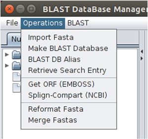

The Operations menu gives the user the possibility to perform eight different operations (Import Fasta, Make BLAST Database, BLAST DB alias, Retrieve Search Entry, Get ORF (EMBOSS), Splign-Compart (NCBI), Reformat Fasta and Merge Fastas) on FASTA-formatted files and BLAST databases.

The Operations menu